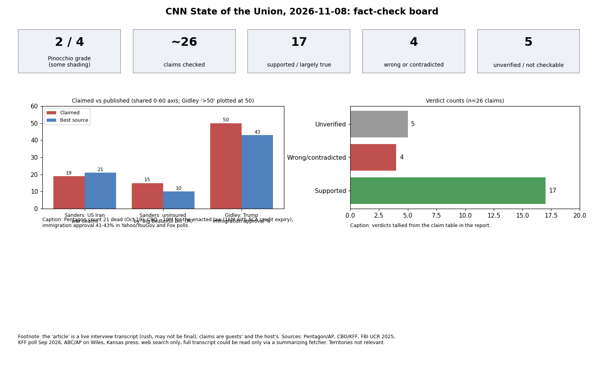

Of 26 claims in the CNN State of the Union transcript (Nov 8, 2026), about 17 hold up, 4 are wrong or contradicted, and 5 could not be verified. Most errors are in partisan guests' numbers, not host framing.
| Claim | Verdict | Evidence | Confidence |
|---|---|---|---|
| Blanche: crime at historic lows | Supported | FBI 2025: murder rate 4.1/100k, lowest since 1955-56; violent crime -9.3% | high |
| Blanche: DOJ dropped charges vs Olympian (Reflecting Pool) | Supported | DOJ moved Jul 31 2026 to drop; judge permanently dismissed Oct 1 (PBS/AP). Prosecutors cited contractor error | high |
| Blanche: 'thousands and thousands' of cases in two years | Plausible, not checkable | No DOJ total located | low |
| Blanche: every AG has represented administration officials before Congress | Not checkable as phrased | Legal-practice generalization | low |
| Bash: Wiles former chief of staff; Means resigned and accused Wiles | Supported | ABC: Wiles out Nov 6, Miller replaces; Means interview (NYT) alleges sugar-industry money. Allegations unproven; Means resigned Oct per reports | medium |
| Bash: Trump won Kansas by 16 in 2024; Hamilton first KS Dem senator since Depression | Supported | Trump 57-41 in KS 2024 (certified results, from background knowledge); Hamilton first in 94 years (Kansas Reflector, AP) | high |
| Bash: Schumer invested $14M for Hamilton | Unsupported / likely misattributed | $14M figure matches Senate Leadership Fund for Marshall; Senate Majority PAC reported ~$5M in Kansas | medium |
| Bash: funding deadline Dec 11 | Supported | CR signed early Sept 2026 funds govt through Dec 11 | high |
| Hamilton: pastor 38 years, then 'led you 36 years' | Internal inconsistency | Transcript contains both; church founded 1990 implies ~36 (background knowledge) | medium |
| Hamilton: 3 SW Kansas counties voted for him, 52-point swing | Partly verified | Hamilton carried Ford, Finney, Seward (States Newsroom); swing size not checkable, results unofficial | low |
| Hamilton: nine GOP legislators wrote Trump on ICE | Not checkable here | No source found | low |
| Hamilton: $2,700/month unsubsidized ACA | Not checkable | Anecdotal example | low |
| Sanders: Musk wealth > bottom 53% of households | Largely supported, time-sensitive | Sanders cites Forbes/Realtime Inequality; 52-53% variants; Musk net worth swung $700B-$1.1T in 2026 | medium |
| Sanders: 66% support Medicare for All | Supported with framing caveat | KFF Sept 2026: 66% favor; falls to ~52% when told private insurance eliminated | medium |
| Sanders: 'well over 100' House Dems support | Not checked | Cosponsor count not retrieved | low |
| Sanders: 19 US service members killed in Iran war | Understated | Pentagon Oct 19: 21 dead, 865 injured; later 22; WaPo Sept: 23 | medium |
| Sanders: 15M lose coverage from 'Big Beautiful Bill' | Overstated for the law alone | CBO ~10M by 2034 for enacted law; ~16M including expiring ACA credits and CMS rule | high |
| Sanders: 60,000 die yearly for lack of care; 500,000 medical bankruptcies; 90M uninsured/underinsured | Not checkable / contested | Advocacy-study estimates; not independently verified | low |
| Garcia: Kushner got $2B from Saudis after leaving WH | Supported | PIF committed $2B to Affinity in 2021 (NYT, many outlets); Kushner says commercial terms; Wyden cites $87M fees | high |
| Garcia: Don Jr. got 'hundreds of thousands' from Russian oligarch for wedding | Largely supported, omits repayment | ProPublica: Kremlev paid hundreds of thousands; Kremlev says Don Jr. repaid (Oct 6) | medium |
| Garcia: DOJ sent letter two years ago re CNN comments | Letter exists; timing unverified | Report of DOJ inquiry letter, undated in results | low |
| Garcia: Miller called Pretti an 'assassin' | Supported | Judiciary Democrats letter quotes Miller; video disputes his account | medium |
| Gidley: Trump immigration approval above 50% | Contradicted | Yahoo/YouGov 41/55; Fox 43%; Reuters/Ipsos: half say gone too far | medium |
| Gidley: Biden policies let in 20 million | Exaggerated | Not supported by border-encounter or CBO/Pew population estimates (background knowledge; not re-fetched) | low |
| Gidley: Wiles first female chief of staff; Conway first female campaign manager to win | Supported | ABC/Fox on Wiles; Conway 2016 is well established | high |
| Jones: Musk spent $80M attacking transgender children in Texas | Not checkable here | Search not completed | low |
| Carter: election about gas and grocery prices | Opinion | Not a factual claim | - |
2 Pinocchios (some shading). Core facts largely hold; several numbers are inflated, understated or lack context.